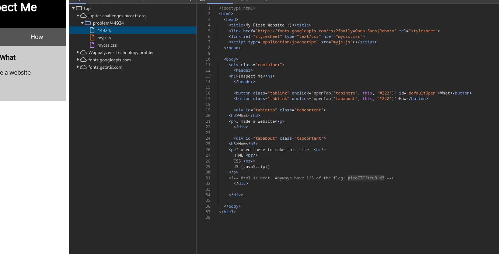
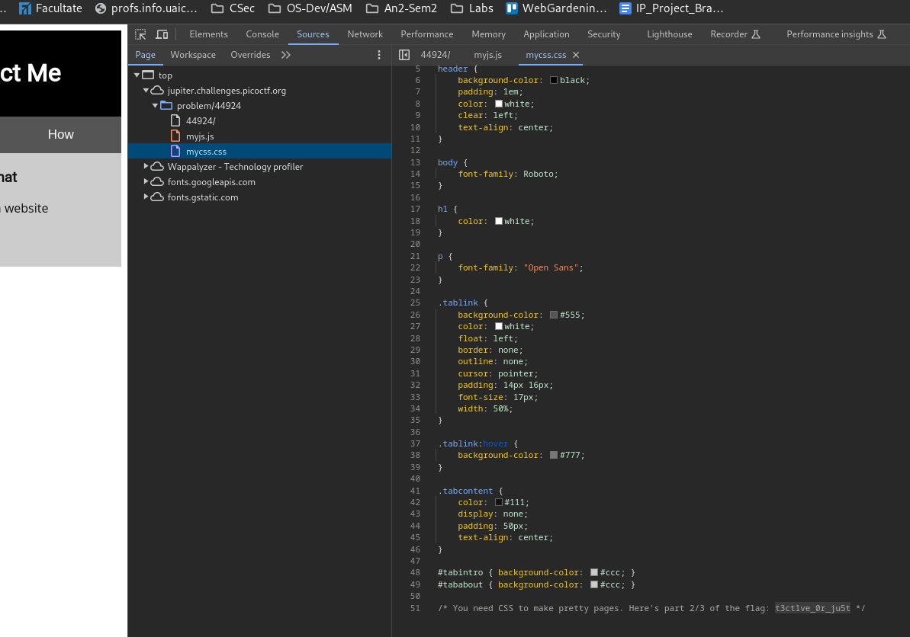
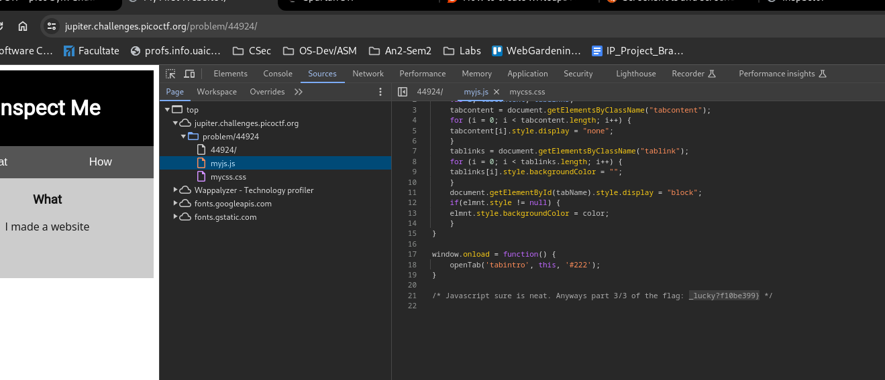

Use developer tools on browser.
In the html file we can see the first part of the flag.

In the css file we can find the second part of the flag.

And in the js file we find the final part of the flag.

Flag : picoCTF{tru3_d3t3ct1ve_0r_ju5t_lucky?f10be399}